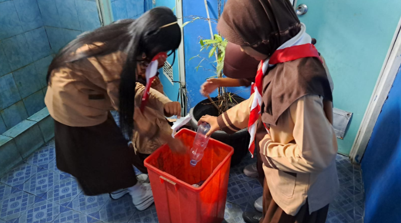

STRATEGI EFEKTIF DALAM PENGELOLAAN SAMPAH SDN PORIS PELAWAD 6 KOTA TANGERANG "Manfaat Pengelolaan Sampah Bagi Ekosistem"
UPAYA PENGELOLAAN SAMPAH
SDN Poris Pelawad 6 yang terletak di Korwil Kecamatan Cipondoh, Kota Tangerang terus berupaya mengedukasi warga sekolah untuk melakukan upaya pengelolaan sampah dengan baik. Pengelolaan sampah merupakan kegiatan yang sangat penting untuk menjaga kebersihan lingkungan dan kesehatan masyarakat. Melalui kegiatan kampanye peduli pengelolaan sampah, hingga pembiasaan yang dilakukan di lingkungan sekolah terkait pengelolaan sampah sekolah terus dilakukan secara maksimal.
Berikut adalah beberapa upaya yang dapat dilakukan dalam pengelolaan sampah:
- Pemilahan Sampah: Pemilahan sampah di sumbernya, seperti di rumah dan tempat kerja, adalah langkah awal yang sangat penting. Sampah dapat dipisahkan menjadi beberapa kategori, seperti organik, anorganik, dan berbahaya. Pemilahan ini memudahkan proses daur ulang dan pengolahan lebih lanjut.
- Daur Ulang: Daur ulang adalah proses mengolah kembali bahan yang sudah tidak terpakai menjadi produk baru yang bermanfaat. Ini dapat mengurangi kebutuhan bahan baru dan mengurangi volume sampah. Contoh bahan yang dapat didaur ulang adalah plastik, kertas, dan logam.
- Pengomposan: Pengomposan adalah metode pengelolaan sampah organik dengan cara menguraikannya menjadi pupuk kompos. Ini adalah cara yang efektif untuk mengurangi volume sampah dan menghasilkan pupuk organik yang bermanfaat bagi pertanian dan taman.
- Pengurangan Penggunaan Plastik: Mengurangi penggunaan plastik sekali pakai adalah langkah penting lainnya. Masyarakat perlu didorong untuk menggunakan tas belanja yang dapat digunakan kembali, botol minum, dan wadah makanan yang ramah lingkungan.
- Edukasi dan Kesadaran Masyarakat: Penting untuk mengedukasi masyarakat mengenai pentingnya pengelolaan sampah dan dampaknya terhadap lingkungan. Kampanye kesadaran dapat dilakukan melalui media sosial, sekolah, dan komunitas.
TUJUAN PENGELOLAAN SAMPAH BAGI LINGKUNGAN
Pengelolaan sampah yang efektif memiliki beberapa tujuan utama bagi lingkungan dan masyarakat sekitar:
- Mengurangi Pencemaran: Dengan pengelolaan yang baik, jumlah sampah yang berakhir di tempat pembuangan akhir dapat dikurangi, sehingga mengurangi pencemaran tanah dan air.
- Menghemat Sumber Daya Alam: Daur ulang dan penggunaan kembali bahan dapat mengurangi kebutuhan akan sumber daya alam baru, seperti kayu, minyak bumi, dan logam.
- Meningkatkan Kualitas Hidup: Lingkungan yang bersih dan sehat meningkatkan kualitas hidup masyarakat. Ini juga dapat mengurangi risiko penyakit yang berhubungan dengan lingkungan.
- Mendorong Ekonomi Sirkular: Dengan meningkatkan kegiatan daur ulang dan penggunaan kembali, pengelolaan sampah dapat menjadi bagian dari ekonomi sirkular yang lebih berkelanjutan.
Dengan upaya pengelolaan sampah yang tepat, kita dapat mewujudkan lingkungan yang lebih bersih dan sehat untuk generasi mendatang.
Kembali ke Berita